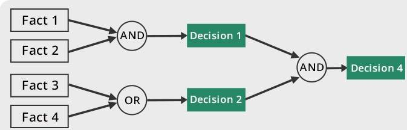
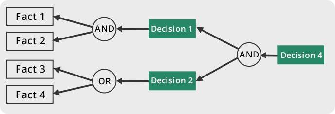

Expert System

Sebuah expert system adalah sebuah sistem komputer yang mengemulasikan kemampuan pengambilan keputusan seorang pakar (atau expert) dalam domain bidang tertentu.
Expert system dibuat untuk menyelesaikan permasalahan-permasalahan kompleks menggunakan knowledge reasoning berdasarkan aturan-aturan dan fakta-fakta tanpa kode prosedural yang konvensional.
Expert system terbagi atas dua subsistem, yaitu: knowledge base dan inference engine.
Knowledge Base
Sebuah knowledge base adalah kumpulan fakta-fakta mengenai domain bidang tertentu dan aturan-aturan yang berhubungan sehingga dapat memproduksi fakta-fakta baru.
Inference Engine
Sebuah inference engine adalah alat atau program komputer yang mengaplikasikan aturan-aturan logika pada fakta-fakta pada knowledge base sehingga dihasilkan fakta-fakta yang baru.
Cara kerja suatu inference engine mengikuti proses inferensi dan tergantung metode inferensi yang digunakannya.
Match Rules
Inference engine akan mencari semua aturan-aturan yang sesuai dengan isi knowledge base. Bagian yang disesuaikan adalah kondisinya (bagian kiri) dengan fakta pada forward chaining, atau hasilnya (bagian kanan) dengan goal pada backward chaining. Jika tidak ada aturan yang dapat dipilih, maka proses inferensi berakhir.
Select Rules
Inference engine akan mengatur urutan eksekusi aturan-aturan yang telah dipilih pada langkah sebelumnya. Urutan eksekusi sesuai dengan prioritas yang ditentukan oleh algoritma implementasi inference engine.
Execute Rules
Inference engine akan mengeksekusi setiap aturan sesuai dengan urutan yang ditentukan pada langkah sebelumnya. Hal ini akan menyebabkan penambahan fakta-fakta yang baru pada forward chaining, atau goal-goal yang baru pada backward chaining.
Forward Chaining

Fakta-fakta dimasukkan ke dalam knowledge base. Hal ini akan memicu aturan-aturan yang kondisinya sesuai dengan fakta-fakta yang baru. Aturan-aturan ini kemudian dapat menambahkan fakta-fakta yang baru ke dalam knowledge base, sehingga memicu aturan-aturan lagi terhadap data baru tersebut. Pencocokan fakta-fakta dilakukan dengan algoritma Breadth-First-Search dan algoritma Rete untuk optimasi aturan berjumlah banyak.
Forward chaining juga disebut sebagai inferensi data-directed, karena proses inferensi dipicu oleh masuknya fakta-fakta baru ke dalam knowledge base.
Inference engine dengan forward chaining biasa dibuat menggunakan bahasa LISP.
Backward Chaining

Inference engine ingin mengetahui kebenaran suatu goal. Inference engine kemudian akan mencari aturan-aturan yang hasilnya sesuai dengan goal tersebut. Sebelum aturan-aturan tersebut dapat digunakan, inference engine harus menguji kondisinya terlebih dahulu. Hal ini akan menyebabkan pencarian kebenaran goal-goal yang baru. Pencocokan goal-goal dilakukan dengan algoritma Depth-First-Search dan algoritma backtracking yang biasa diimplementasikan secara rekursif.
Backward chaining juga disebut sebagai inferensi goal-directed atau hypothesis-driven, karena proses inferensi hanya dilakukan saat inference engine ingin membuktikan kebenaran suatu goal.
Inference engine dengan forward chaining biasa dibuat menggunakan bahasa Prolog.